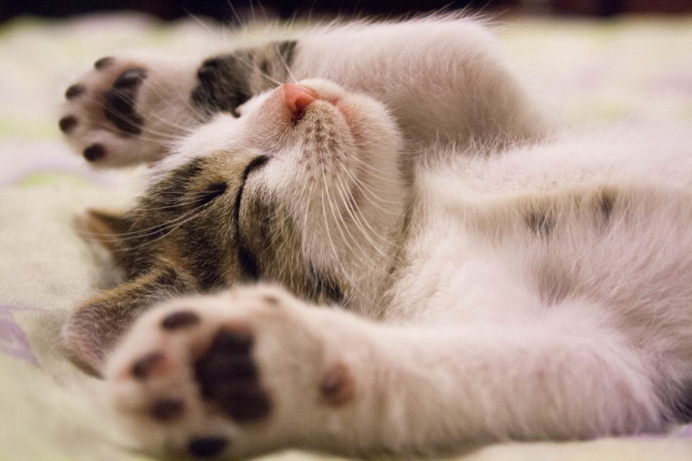

Información General
Los gatos son animales domésticos que han acompañado al ser humano desde hace miles de años. Son conocidos por su agilidad, curiosidad y gran capacidad de adaptación.
Galería de Gatos
Datos Curiosos
- Los gatos pueden hacer más de 100 sonidos vocales diferentes.
- Un gato puede saltar hasta 5 veces su altura en un solo salto.
- Los gatos tienen bigotes sensibles para medir distancias y espacios.
- Existen más de 500 millones de gatos domésticos en el mundo de 40 razas.
- Los gatos hacen unos 100 sonidos y los perros solamente 10.
- Son los animales con mayor oído.
- Un gato que nace con un ojo azul normalmente es sordo de la oreja más cercana.
- El gato más longevo vivió 34 años.